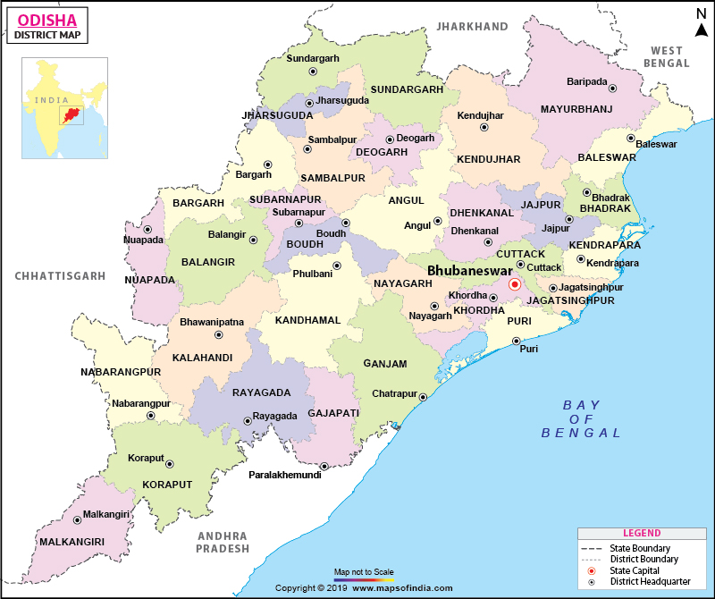

THE STATE

Odisha (English: /əˈdɪsə/,[12] Odia: [oɽiˈsa] formerly Orissa is an Indian state located in Eastern India. It is the
largest state by area, and the 11th largest by population. The state has the third largest population of Scheduled Tribes in India.[14] It neighbours the states of West Bengal and Jharkhand to the north, Chhattisgarh to the west, Andhra Pradesh to the south, and a very negligible border with Telangana to the southwest. Odisha has a coastline of 485 kilometres (301 mi) along the Bay of Bengal.[15] The region is also known as Utkala and is mentioned in India's national anthem, "Jana Gana Mana"
. The language of Odisha is Odia,
which is one of the Classical Languages of India.
CAPITAL:BHUBANESWAR
Government
• Body Government of Odisha
• Governor Ganeshi Lal
• Chief Minister Naveen Patnaik
• Legislature Unicameral (147 seats)
• Parliamentary constituency Lok Sabha (21 seats)
Rajya Sabha (10 seats)
• High Court Orissa High Court
Area
• Total 155,707 km2 (60,119 sq mi)
Area rank 8th
Population (2011)
• Total 41,974,218[1]
• Rank 11th
Demonym(s) Odia